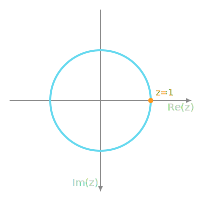

To test for cointegration, we use the bounds F-test on the ARDL model as follows:
bounds_test_results <-bounds_f_test( ardl_3132 ,case =2, # Case 2: Restricted intercept and no trend.alpha =0.01# Confidence interval at which we test H_0 )bounds_test_results
Bounds F-test (Wald) for no cointegration
data: d(LRM) ~ L(LRM, 1) + L(LRY, 1) + L(IBO, 1) + L(IDE, 1) + d(L(LRM, 1)) + d(L(LRM, 2)) + d(LRY) + d(IBO) + d(L(IBO, 1)) + d(L(IBO, 2)) + d(IDE) + d(L(IDE, 1))
F = 5.1168, Lower-bound I(0) = 3.6744, Upper-bound I(1) = 4.6104,
p-value = 0.004418
alternative hypothesis: Possible cointegration
null values:
k T
3 1000
For the null hypothesis of no cointegration to be accepted, the F-statistic must lie between the lower bound \(I(0) = 2.7750\) and the upper bound \(I(1) = 3.6595\). Since the calculated F-statistic is 5.1168, which falls outside these bounds, we reject the null hypothesis at the 1% significance level. Therefore, a possible cointegrating relationship exists between the endogenous variable LRM and the exogenous variables LRY, IBO, and IDE.
Given this result, the cointegration vector is as follows:
multipliers(ardl_3132)
Term Estimate Std. Error t value Pr(>|t|)
1 (Intercept) 6.2856579 0.7719160 8.142930 6.107445e-10
2 LRY 0.9964676 0.1239310 8.040503 8.358472e-10
3 IBO -4.5381160 0.5202961 -8.722180 1.058619e-10
4 IDE 2.8915201 0.9950853 2.905801 6.009239e-03
The resulting cointegration vector, including the intercept, is shown in Equation 2:
Given the ARDL model, can we find the cointegration vector using a simple \(\mathcal{Z}\)-transform technique?
Cointegration Vector from the ARDL Equation using Z-Domain Techniques
The Z-Plane

The Z-Plane, showing the unit circle and the point Z=1, which corresponds to the steady-state or DC component of a signal.
Applying the \(\mathcal{Z}\)-transform to Equation 1, we obtain ?@eq-z_transformed. To find the long-run (steady-state) relationship, we must evaluate the system’s response at zero frequency, which corresponds to setting \(\mathcal{Z}=1\).
Setting \(\mathcal{Z}=1\) in ?@eq-z_transformed allows us to solve for the long-run multipliers because \(\mathcal{Z}=1\) represents the DC or steady-state component of the signal. The formula for the long-run multipliers is given in Equation 3:
where \(\beta_i\) are the coefficients of the lagged \(LRM\), and \(\gamma_j, \delta_k, \zeta_l\) are the coefficients of the exogenous variables and their lags.
When we sum the full-precision coefficients from the ardl_3132 model object and solve, we get the long-run equation shown in Equation 4:
As shown, this result from the \(\mathcal{Z}\)-transform method is identical to the cointegration vector produced by the multipliers() function in Equation 2. This confirms that setting \(\mathcal{Z}=1\) is the correct approach for deriving the long-run equilibrium relationship from the ARDL model’s difference equation.
The Cointegration Vector From The Time Domain
The same result can be obtained by realising that the cointegration vector is the long term relationship which remains when all short term transients have died down. If this is the case, then to find the long term reltionship, ignore the lags since the lagged variable values must be equal to the corresponding, contemporaneous values. Simplifying the resulting equation produces the cointegration vector.